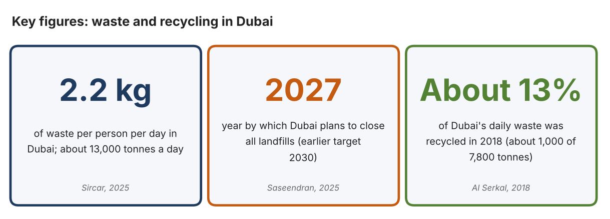
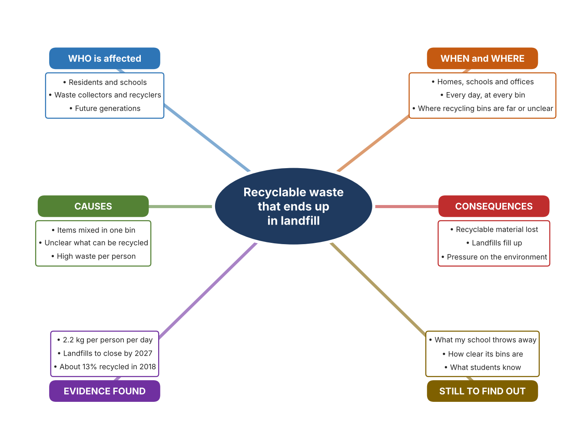
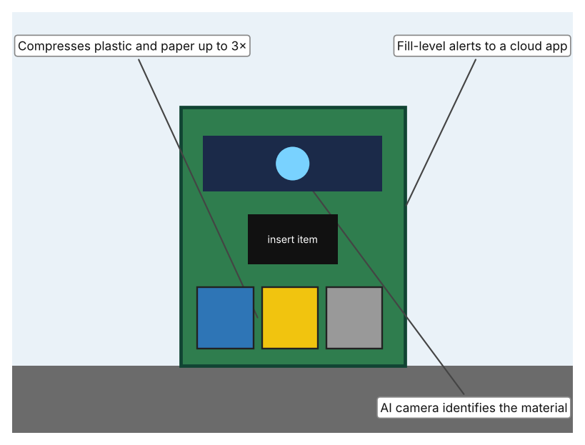
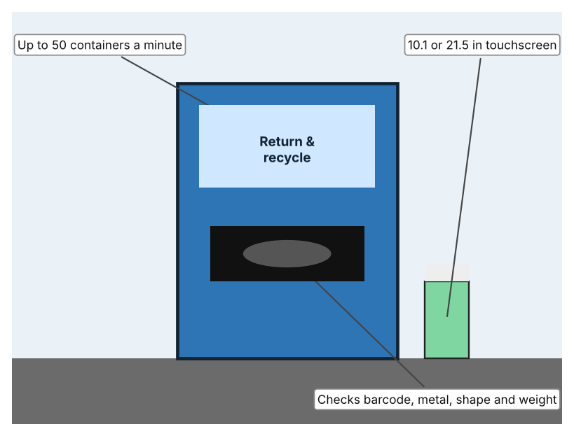
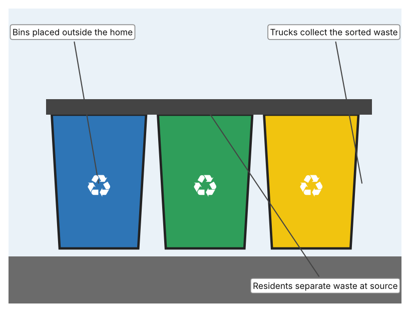

A1 · Design need
Identify and explain the problem faced by your client and community.
My client is the Sustainability Coordinator of a school in Dubai (a fictional client created for this task). The school has hundreds of students and staff, and every day it produces waste from classrooms, offices and the canteen. The coordinator has noticed that recyclable items such as bottles, paper and cans often end up together with food waste in the same bin. The client needs the school's waste to be separated properly, so that more of it can be recycled and less of it is lost.
The people affected include everyone in the school who produces waste, because they share responsibility for it. Cleaners and waste collectors are affected because mixed waste is harder and less pleasant to handle. Recyclers are affected because they depend on clean, separated material. The wider community and future generations are affected because wasted material and full landfills have long-term costs.
The need is supported by evidence. Circle Dubai, a Dubai Municipality programme, reports that each resident produces about 2.2 kg of waste a day, a total of about 13,000 tonnes daily (Sircar). Dubai has announced that it will close all landfills by 2027, five years earlier than its previous 2030 target, and aims to recycle all waste by 2030 (Saseendran). In 2018, Dubai recycled about 1,000 of about 7,800 tonnes of daily waste, and a petrochemical association said that Gulf recycling was below 10% (Al Serkal). The 2018 figures are old, so I treat them as a starting point, and none of the sources gives data on how much recyclable material is mixed with other waste.
Figure 1 summarises the key numbers. In my own words, throwing away is quick, but sorting needs attention and clear choices, and a single wrong item can reduce what can be recovered. I still need to find out what my own school's bins contain and how clear the choices are, and I will do this with a visual bin checklist and a short survey. Figure 2 is my mind map of the problem.
335 words


A2 · Research plan
Six research questions of different types, each with a priority, a research type and evidence.
| # | Question | Priority | Primary / secondary | Evidence | Brief answer |
|---|---|---|---|---|---|
| 1 | Factual: How much waste does Dubai produce, and what are its targets? | High | Secondary | Sircar, 2025; Saseendran, 2025 (Appendix A, Sources 1 and 2) | About 2.2 kg per person per day and about 13,000 tonnes a day; landfills to close by 2027 and 100% recycling by 2030. |
| 2 | Factual: How much of Dubai's waste was recycled, and how is household waste collected? | High | Secondary | Al Serkal, Gulf News, 2018 (Appendix A, Source 3) | About 1,000 of 7,800 tonnes per day were recycled; 40,000 bins were given to 20,000 villas in 12 sectors; Gulf recycling below 10%. Source is from 2018. |
| 3 | Conceptual: Why does mixing waste reduce how much can be recycled, and how can items be sorted? | Medium | Secondary | Al Serkal, 2018; vendor pages (Appendix A, Sources 3, 4 and 5) | Separation at source gives cleaner material. Sorting can use residents' choices, cameras that identify items, or sensors that check barcode, metal, shape and weight. The sources give no contamination data. |
| 4 | Debatable: Should sorting be done by residents, by machines or at a central plant? | Medium | Secondary | Appendix A, Sources 3, 4 and 5 | Residents can sort for free but make mistakes; machines can check each item but cost money and space; central plants handle large volumes. My view: sort at source with help. |
| 5 | Debatable (challenges my assumption, UAE source): Dubai will close its landfills by 2027, so is it still worth a school sorting its own waste? | High | Secondary | Saseendran, 2025; Sircar, 2025 (Appendix A, Sources 1 and 2) | The landfill target and a plan to reduce waste per person to 1.76 kg (about 20% lower) show that the city expects residents to take part, so a school's contribution still counts. I still need to know what my school's bins contain. |
| 6 | Factual (primary): What do our school's bins contain, and how clear are the choices to students? | High | Primary | Own bin checklist and survey (Appendix A, Sources 6 and 7) | [Student data needed: write the checklist counts and survey averages (with permission), then two sentences on the pattern you see. Look only; do not touch the waste.] |
A3 · Existing products
Three significantly different products, each analysed with ACCESS FM, with pros and cons.
Product 1: Smart bin that identifies waste (Bin-e Standard)

Illustration by the author based on “Bin-e Standard,” German Distribution (Appendix A, Source 4). [Student: replace with a photo from the source, cited MLA 9]
Product 2: Reverse vending machine (RVM X3)

Illustration by the author based on “RVM X3,” RVM Systems (Appendix A, Source 5). [Student: replace with a photo from the source, cited MLA 9]
Product 3: Household recycling bins (Dubai villas)

Illustration by the author based on Al Serkal, “40,000 Recycling Bins to Be Distributed” (Appendix A, Source 3). [Student: replace with a photo from the source, cited MLA 9]
ACCESS FM analysis
| ACCESS FM | Product 1 | Product 2 | Product 3 |
|---|---|---|---|
| Aesthetics | Upright bin with a display; the page does not describe the look further. | A tall machine with a screen and an opening for containers. | Plain coloured bins; Gulf News does not describe the look. |
| Cost | Price on quotation only. | Price not stated. | Not stated; bins were given to villa residents. |
| Customer | Offices, schools and public places that want automatic sorting. | Shops and public sites that collect drink containers; DRS-ready (deposit return scheme). | Households in villas; 40,000 bins for 20,000 villas. |
| Environment | Compresses waste, needs a power supply and a cloud connection for alerts. | Needs 230 or 110 V mains power. | Needs no power; trucks collect the waste. |
| Size | 127 × 116 × 64 cm; about 15 L recognition chamber. | Size is not stated on the page. | Standard household size; not stated. |
| Safety | Vendor says over 92% recognition accuracy (unverified). Bystander view: users do not need to touch the waste. | Metal detection and shape and weight checks reduce wrong items. Bystander view: machines can jam. | Relies on residents to sort correctly. Bystander view: waste staff may find mixed items. |
| Function | Camera recognises the material, sorts it into compartments, compacts it and reports how full it is. | Accepts PET, cans and glass, compacts them and can work with a deposit scheme. | Residents separate recyclable waste from other waste at the point where it is produced. |
| Materials | Materials are not stated. | Materials are not stated. | Plastic bins; materials not stated. |
Pros and cons
| Product 1 | Product 2 | Product 3 | |
|---|---|---|---|
| Pro | Sorts automatically, saves space by compacting and tells staff when it is full. | Fast, checks each container and can pay or reward users. | Simple, needs no power and lets every household take part. |
| Con | Costly (price on quotation), needs power and the accuracy figure comes from the vendor. | Only takes drink containers and needs mains power and regular emptying. | Depends on people sorting correctly and gives no feedback when they make mistakes. |
A4 · Design brief
Restate the need, summarise the research and the existing products, and state the design intent.
My client, the Sustainability Coordinator of a school in Dubai, needs the school's waste to be separated properly so that more of it can be recycled. Each Dubai resident produces about 2.2 kg of waste a day, a total of about 13,000 tonnes (Appendix A, Source 1). Dubai plans to close all landfills by 2027 and recycle all waste by 2030 (Appendix A, Source 2), but in 2018 only about 1,000 of 7,800 tonnes a day were recycled (Appendix A, Source 3).
My research shows that the gap between waste produced and waste recycled is large, and that the plans depend on residents separating waste at source (Appendix A, Sources 1 to 3). My debatable questions led me to conclude that residents, machines and central plants each have strengths and weaknesses. My challenged assumption was that closing landfills makes a school's effort unimportant; the targets suggest the opposite, since they depend on everyone taking part. None of my sources gives data on mixed waste, so I will gather my own evidence with a bin checklist and a survey, without touching waste (Appendix A, Sources 6 and 7).
I analysed three very different existing solutions. A smart bin identifies the material with a camera and compacts it, but its price is on quotation only and the accuracy figure comes from the vendor (Appendix A, Source 4). A reverse vending machine handles up to 50 containers a minute and can work with a deposit scheme, but it only takes drink containers and needs mains power (Appendix A, Source 5). Household recycling bins are simple and need no power, but they rely on people sorting correctly (Appendix A, Source 3). They give me three ideas for inspiration: identify items automatically, reward returns, and separate at the point of disposal.
My design intent is therefore to create a solution that helps people to separate waste correctly, so that more of the school's waste can be recycled. It must be affordable, clear to students of all ages, safe to use, and robust enough for daily school use. I have deliberately not fixed what form it will take. That decision will be made in Criterion B, after I analyse my own checklist and survey against the evidence in Appendix A.
374 words
Appendix A · Research notes and sources
Secondary sources in MLA 9, with notes and where each source is used.
| # | Source (MLA 9) | Key notes | Used in |
|---|---|---|---|
| 1 | Sircar, Nandini. “‘Circle Dubai’ Aims to Reduce Daily Waste by Nearly Half a Kg per Resident.” Khaleej Times, 27 Oct. 2025, www.khaleejtimes.com/uae/environment/circle-dubai-aim-reduce-daily-waste-nearly-half-kg-each-resident. Accessed 21 Oct. 2026. | About 2.2 kg of waste per person per day and about 13,000 tonnes a day; target of 1.76 kg (about 20% lower); smart recycling bins; sorting at source; no contamination data. | A1; A2 Q1, Q4 and Q5; A4. |
| 2 | Saseendran, Sajila. “Dubai to Close All Landfills by 2027.” Gulf News, 1 May 2025, gulfnews.com/uae/dubai-to-close-all-landfills-by-2027-1.500112014. Accessed 21 Oct. 2026. | Landfills to close by 2027 (previously 2030); recycle 100% by 2030; Warsan waste-to-energy plant of 2 million tonnes a year. | A1; A2 Q1 and Q5; A4. |
| 3 | Al Serkal, Mariam M. “40,000 Recycling Bins to Be Distributed to 20,000 Villas in Dubai.” Gulf News, 15 Sep. 2018, gulfnews.com/uae/environment/40000-recycling-bins-to-be-distributed-to-20000-villas-in-dubai-1.1293728. Accessed 21 Oct. 2026. | 40,000 bins for 20,000 villas in 12 sectors; separation at source; about 1,000 of about 7,800 tonnes a day recycled; Gulf recycling below 10%. Article from 2018. | A1; A2 Q2 and Q3; A3 Product 3; A4. |
| 4 | “Bin-e Standard.” German Distribution, www.germandistribution.com/products/innovative-waste-management/bin-e-standard. Accessed 21 Oct. 2026. | 127 × 116 × 64 cm; AI camera; recognition chamber about 15 L; over 92% accuracy (vendor claim); compresses plastic and paper up to 3×; fill-level sensors and cloud app; price on quotation. | A2 Q3 and Q4; A3 Product 1; A4. |
| 5 | “RVM X3.” RVM Systems, www.rvmsystems.com/rvmx3. Accessed 21 Oct. 2026. | Up to 50 containers a minute; PET, cans and glass; barcode, metal detection, shape and weight recognition; compacts containers; 10.1 or 21.5 in touchscreen; 230 or 110 V; deposit-return-scheme ready. | A2 Q3 and Q4; A3 Product 2; A4. |
| 6 | Primary: bin checklist, completed by the student on [date]. Accessed own data. | [Student: summarise your counts.] | A2 primary question; A4. |
| 7 | Primary: survey of [number] people, completed on [date]. | [Student: summarise your averages.] | A2 primary question; A4. |
Primary research instrument 1: bin checklist
Student completes the checklist with permission, by looking at bins only; no waste is touched.
| Bin location | Separate bins available (Y/N) | Labels are clear (Y/N) | Wrong item visible (Y/N) | Bin is overflowing (Y/N) | Notes |
|---|---|---|---|---|---|
| Canteen | |||||
| Classroom | |||||
| Corridor | |||||
| Outdoor area |
Primary research instrument 2: survey
Rate each statement from 1 (strongly disagree) to 5 (strongly agree). Collect responses with permission and record no names.
| Statement | 1 | 2 | 3 | 4 | 5 | Total responses |
|---|---|---|---|---|---|---|
| I know which items go in which bin. | ||||||
| The bins at school are easy to understand. | ||||||
| I usually put my waste in the right bin. | ||||||
| I would recycle more if sorting were easier. |